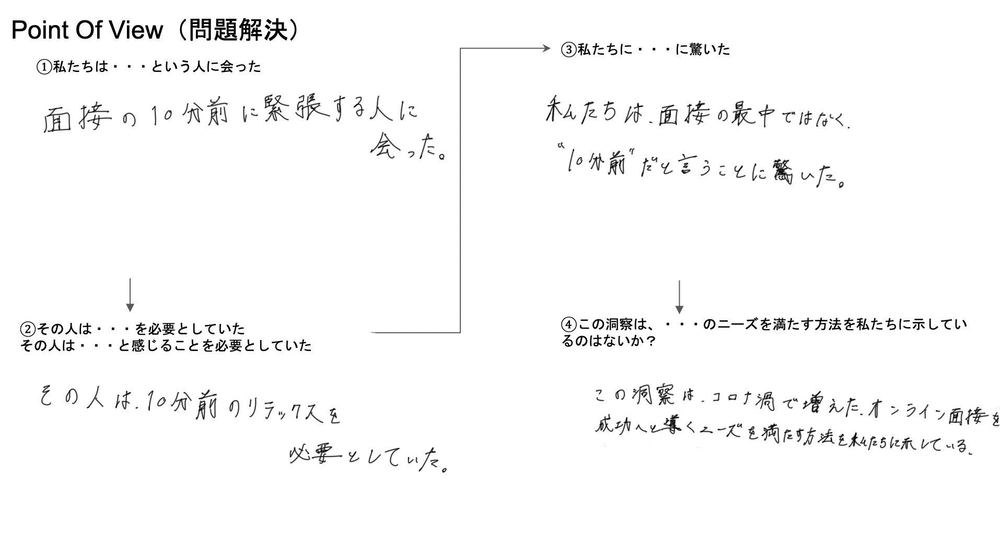

第二回授業ノート まとめ
コード
- #include <Adafruit_NeoPixel.h>
- #define PIN 9 // 信号用のピンを指定
- #define NUMPIXELS 5 // LEDの数を指定
- int brightness=50;//明るさ
- Adafruit_NeoPixel pixels(NUMPIXELS, PIN, NEO_GRB + NEO_KHZ800);
- void setup() {
- pixels.begin(); // NeoPixel出力ピンの初期化
- pixels.setBrightness(brightness);
- }
- void loop() {
- pixels.clear(); // すべてのLEDの色を0にセット
- for(int i=0; i<NUMPIXELS; i++) {
- int r=random(0,255);
- int g=random(0,255);
- int b=random(0,255);
- pixels.setPixelColor(i, pixels.Color(100, 255, 100));
- pixels.show();
- delay(1000);
- }
- }
グループワーク point of view
マイナスの感情＜面接の10分前＞
